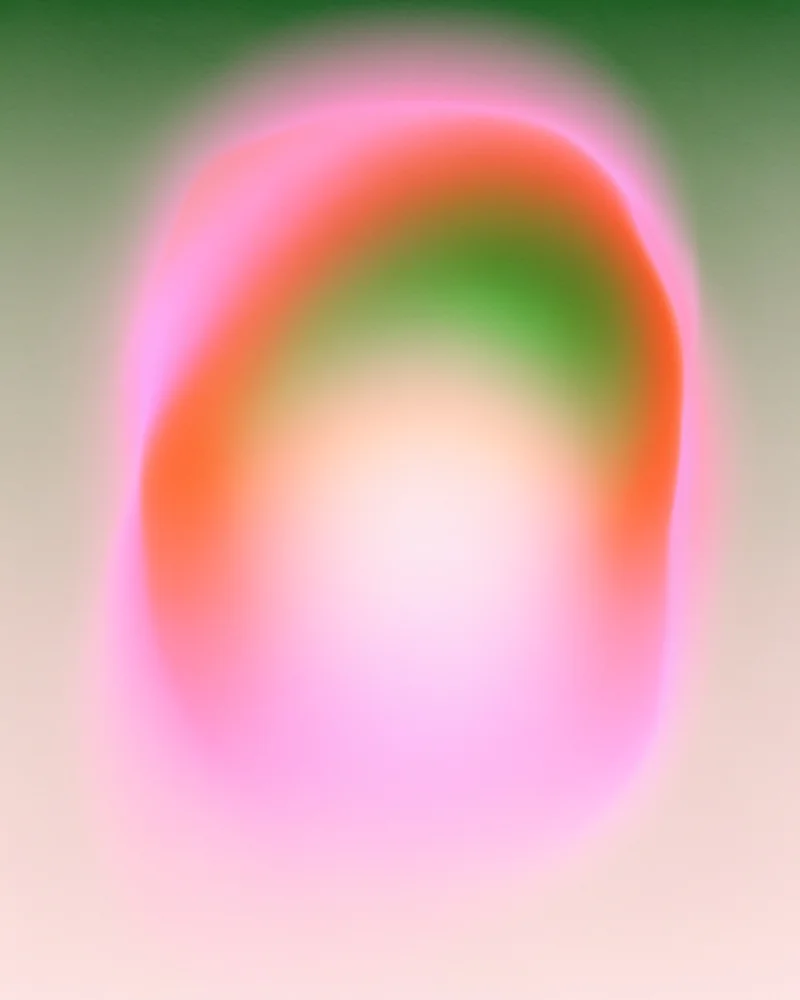
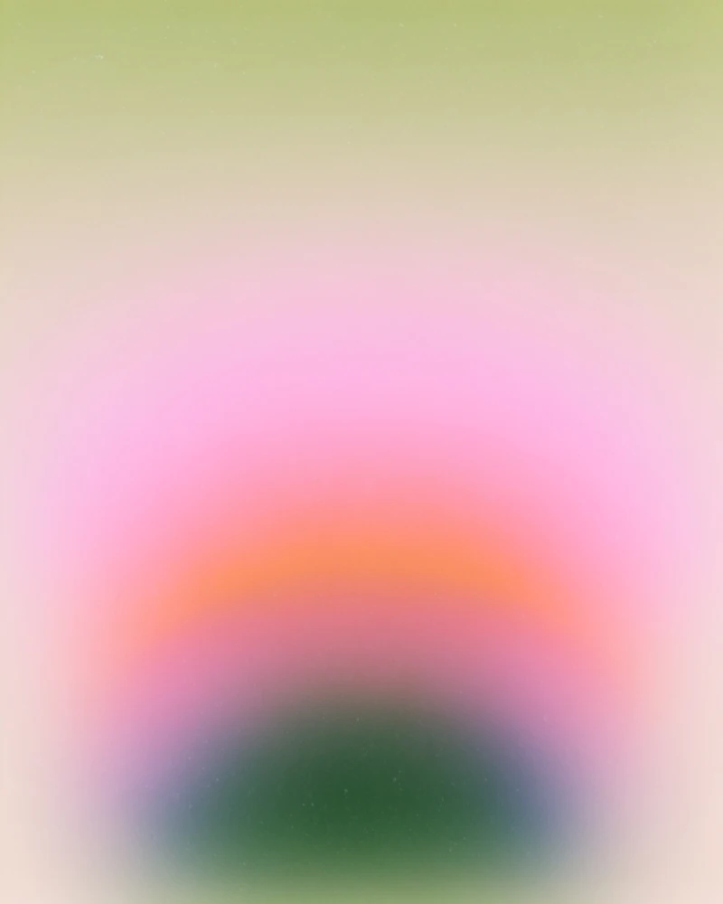
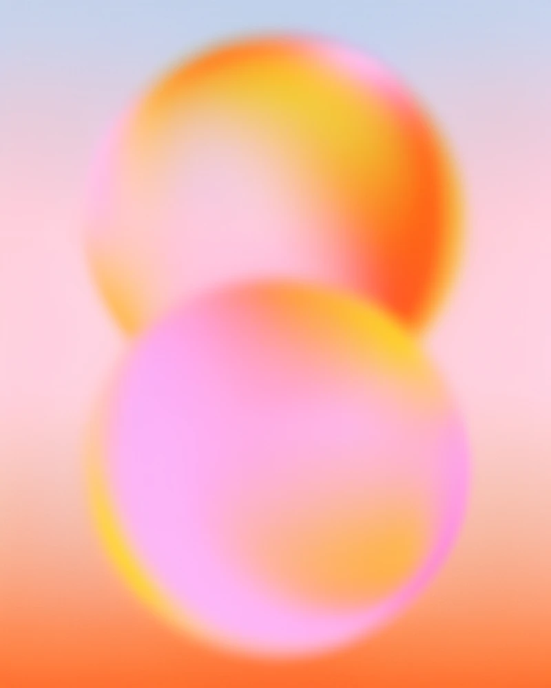
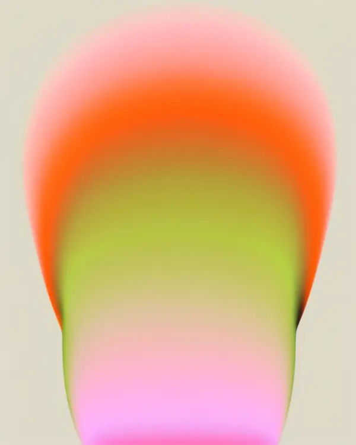
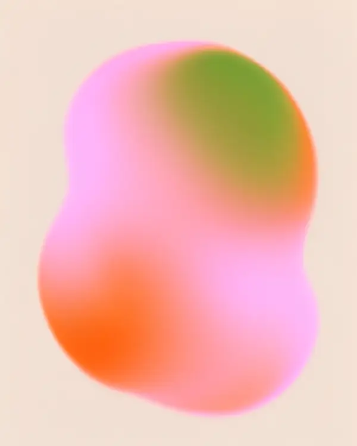

Inspired by Magazine

L'últim sopar de Leonardo
Tretze homes asseguts en filera, estovalles de lli, gots de vidre i anguiles amb taronja. Gairebé res del mural més famós del món no encaixa amb la Jerusalem del segle I — ni amb un sol evangeli.

Per què van aixecar Stonehenge?
Cap druida no hi va posar un peu, la festa gran era a l'hivern i les pedres van viatjar fins a 750 km. L'arqueologia recent revela un cementiri neolític, un pacte d'illa i un mirall de cada època.

El viatge de la pizza
Un pa pla nascut abans de l'agricultura, un fruit andí que Europa va témer com a verí i una búfala de l'Índia. Com el pa de carrer de Nàpols va conquerir tot el planeta.

Per què riem?
Riem trenta cops més acompanyats que sols, i gairebé mai per un acudit. Dels duels inuit als grans simis: quan un reflex animal esdevé pacte i tribunal.

Per què dormim?
El dormitori solitari és una raresa històrica. De les fregates que dormen volant a les fogueres del Kalahari i l'inemuri japonès: com modela cada cultura el son.

Qui era realment Jesús?
No es deia Jesús, va néixer uns anys «abans de Crist» i cap text antic no descriu la seva cara. Què en sap la història, com l'ha pintat cada cultura i com el veuen les altres religions.

Una vida, quatre evangelis
Quan Pau escrivia als corintis, cap dels quatre evangelis existia encara, però ja es recordava l'últim sopar. Quatre relats que discrepen sobre Jesús de Natzaret.

El Niño i La Niña
Cada pocs anys, un tros del Pacífic s'escalfa uns graus i a l'altra punta del món hi ha inundacions, incendis i sequeres. Com mou un canvi oceànic mig planeta.

El calendari còsmic
Durant gairebé tota la història del cosmos no hem existit. Si comprimim del Big Bang fins avui en un any, els humans hauríem arribat el 31 de desembre al vespre.

De què mor el món?
De guerres? De gana? Si al món només hi visquessin cent persones, de què moririen segons les dades més recents? Avui mor més gent per suïcidi que per homicidi.

La gran migració de cada nit
Cada vespre milers de milions d'animals pugen del fons marí per menjar i baixen abans de l'alba. Passa cada dia a tots els oceans, i ho vam descobrir per error.

La guerra invisible
En cada gota de mar, centenars de milers de virus ataquen bacteris que es defensen sense treva. D'aquesta guerra invisible, la ciència en va treure el CRISPR.

La pols que adoba l'Amazònia
El vent s'enduu cada any milions de tones de pols del Sàhara fins a Amèrica. Una part cau sobre l'Amazònia i li porta el fòsfor que la pluja s'emporta.

La cinta transportadora de l'Atlàntic
Un corrent invisible porta calor al nord i aigua freda al sud a quilòmetres de fondària. Mou catorze cops l'aigua de tots els rius junts, i pot estar afeblint-se.

On va el CO₂ que emetem
Cada any aboquem a l'aire més de 40.000 milions de tones de CO₂, però menys de la meitat s'hi queda. Seguim la resta fins al fons del mar i les fulles dels boscos.